HOTEL EZRA CORNELL '92
It's All About the Guest Experience
Hotel Ezra Cornell (HEC) is an annual student-run hospitality event and alumni conference. The conference includes a series of educational seminars, food and beverage events, numerous networking events, and thought provoking conversations about the hospitality industry. This year, in its 92nd year, HEC explores change and how companies are adapting to changes in the hospitality industry while staying true to the values that made them successful in the first place.
As the Lead Designer for Friday night's event, Face the Future, Preserve the Past, I transformed Statler's Student Lounge into "the Old World" and the Student Library into "the New World" tied together by the concept of patterns. Patterns is something that transcends time: the prevalence of pattern has never disappeared throughout history. Through my designs, I aimed to create a memorable experience for 250 guests.
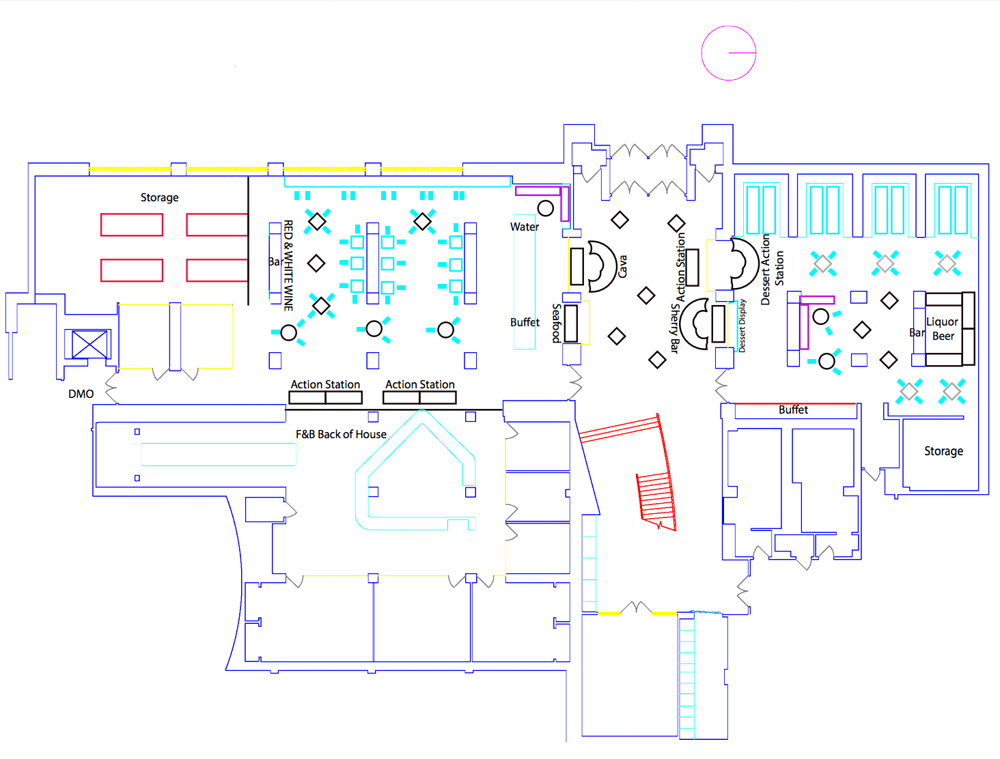
Left: Student Library; Right: Student Lounge
Face the Future: the Future Room
The Future Room focuses on contemporary trends in the hospitality and design industries. By interplaying with patterns and illuminating elements, I aimed to highlight the vast advancement of modern technology. The room is transformed into a cocktail lounge and seafood bar, with dishes and drinks tailored to represent "the New World".

Upon entering the walkway into the Student library, I projected a gobo light installation by the corner wall. Being one of the main design elements of the future room, the gobo light illuminates the entire room. On the shelves in that corner, I placed mirror glass candles and reflective surfaces to further explore the interaction between patterns and light. Utilizing the low ceilings of the room, I installed lazer cut patterns attached to reflective mirror-like paper. Spot lights from below are shone upwards whereas the light patterns seep through, hitting all corners of the room. As a guided-trail to the back seating area, I hung thin triangular mirror pieces from the pipes to add reflections to the ground as well as onto the window drapes. A twitter feed displayed on the big screen allowed guests to discuss and read about each others' thoughts on the past and future of the hospitality industry.
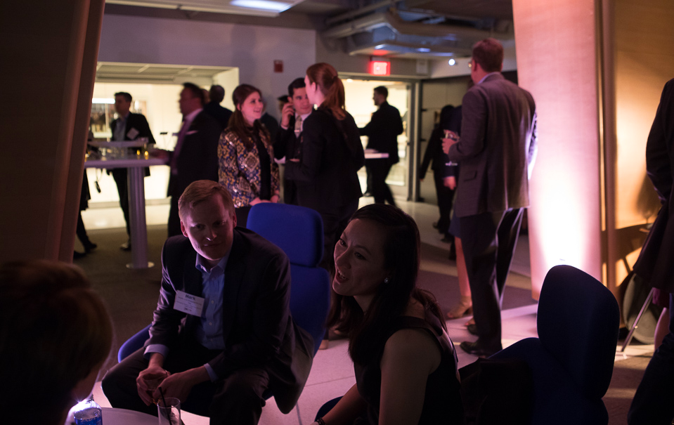
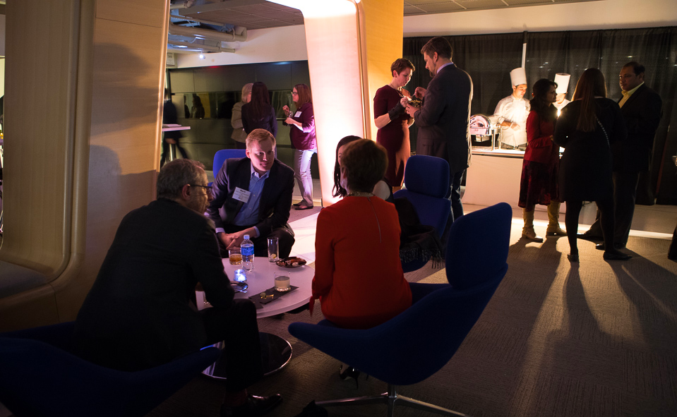
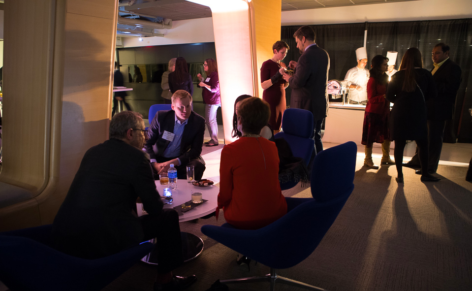
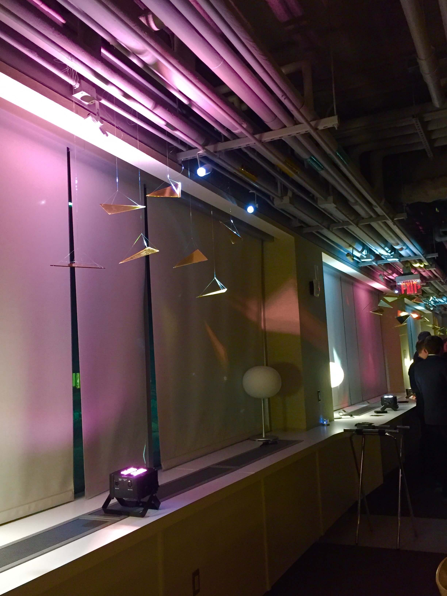
Preserve the Past: the Past Room
The Past Room focuses on preserving and appreciating the values and traditions of the past. Making use of found-objects and HEC elements such as old articles and photos from the past, I transformed the Student lounge into tunnel into the past. Dishes and drinks are carefully chosen to represent "the Old World". Fancy cakes, a dessert recipee from HEC '56, exemplifies the remininscences of the past.

One of the main design elements of the Past Room is utilizing found to shine a distinct pattern of Cornell University. Spotlights were installed to help achieve this effect. I also created a walk-way gallery of life size cutouts of old HEC students and guests. The cutouts are hung from the mesh ceiling as if they coexist beside us in space. I also placed old wine bottles as well as HEC plates from the past on display.
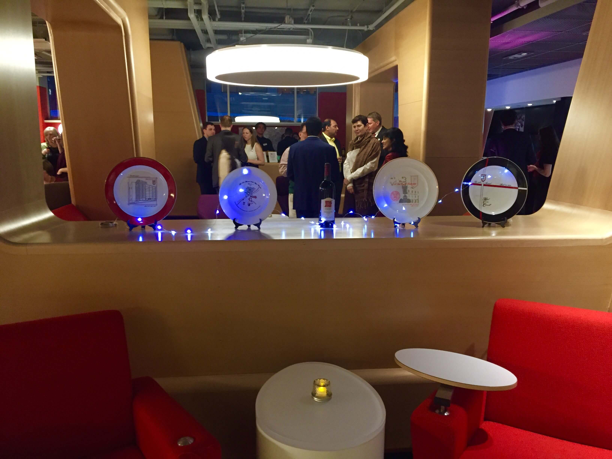
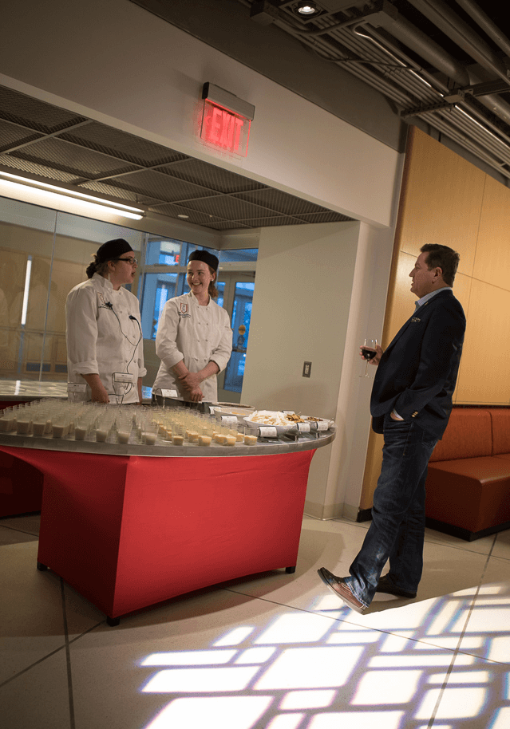
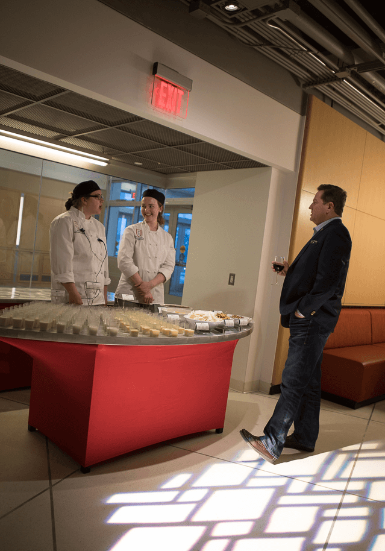
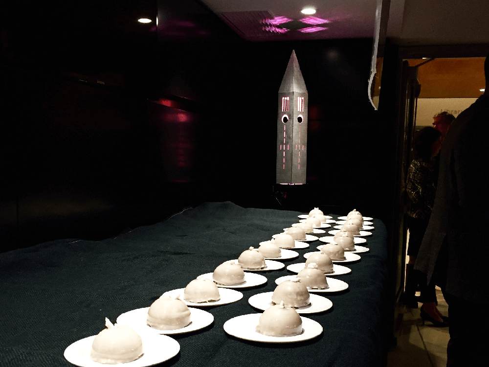
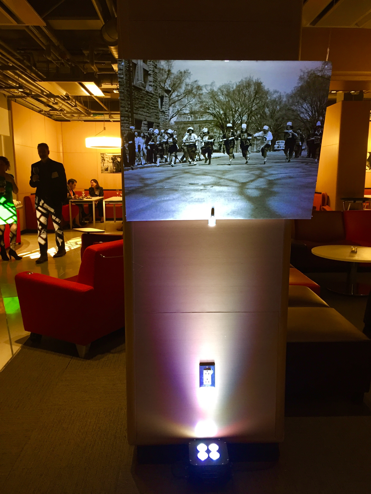
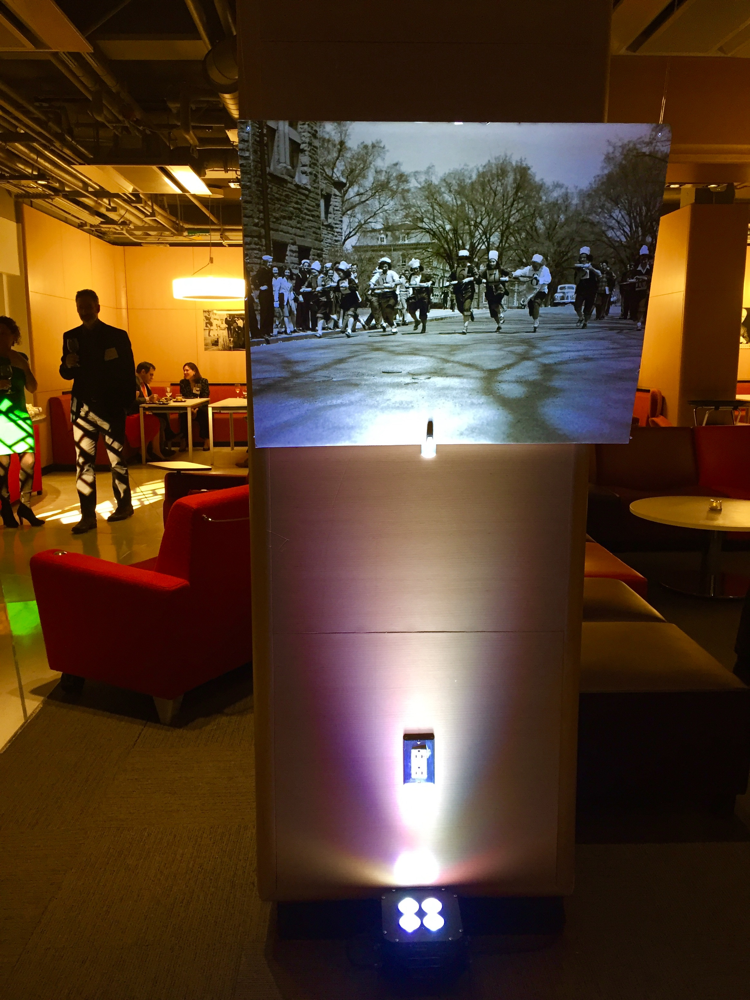